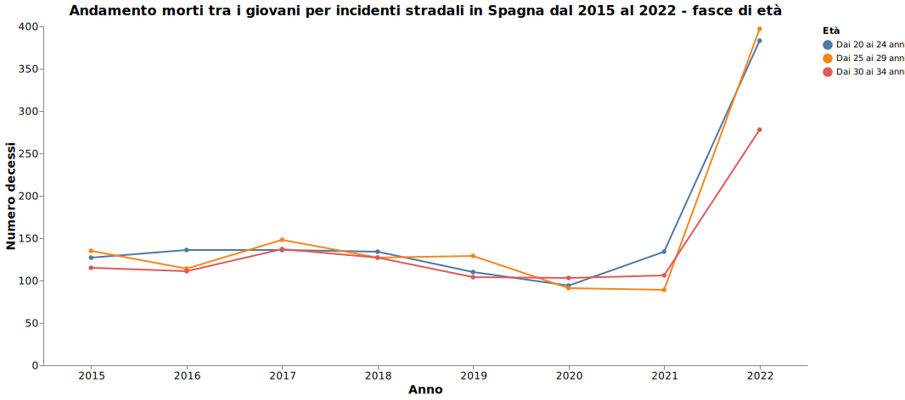
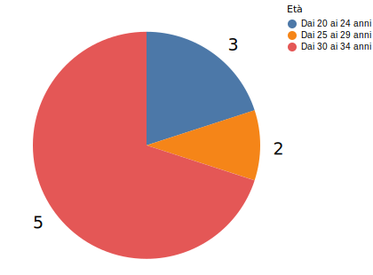
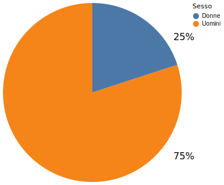

Italia ed Europa a confronto
Qual è la situazione italiana rispetto a quella di altri Paesi europei? Quali sono le principali cause di decesso negli altri Paesi europei tra i giovani?
Qual è la situazione italiana rispetto a quella di altri Paesi europei? Quali sono le principali cause di decesso negli altri Paesi europei tra i giovani?
Nel 2015, le statistiche evidenziano notevoli differenze tra le principali cause di decesso dei giovani in Spagna e Italia.
In Italia, come abbiamo potuto vedere, gli incidenti stradali sono emersi come la principale causa di morte. Questo dato indica una preoccupante situazione in merito alla sicurezza stradale e alla guida responsabile nella nazione.
In Spagna, invece, nel 2015 la causa principale di decesso tra i giovani sono stati i tumori. Con un numero di vittime superiore a qualsiasi altra causa, questi dati rivelano una sfida significativa per la salute pubblica in Spagna e richiedono un approccio più ampio per comprendere e affrontare il problema.
I dati mostrano anche come al secondo posto tra le principali cause di morte dei giovani spagnoli nel 2015 si trovino il suicidio e l'autolesionismo e solo al terzo posto compaiano gli incidenti stradali.
Nel 2020 i dati segnalano alcune variazioni rispetto al 2015, dovuta principalmente agli effetti della pandemia da Covid-19
In Italia, gli incidenti stradali hanno continuato a essere la prima causa di morte tra i giovani, ma si è verificato un calo.
In Spagna, nello stesso anno, gli incidenti stradali sono ancora al terzo posto, preceduti da tumori, suicidi e autolesionismo.
Interessante a tal proposito notare come il Covid-19 non compaia affatto tra le cause principali di decesso nei giovani, né in Italia né in Spagna: ciò è ovviamente dovuto al fatto che i giovani possiedono un sistema immunitario naturalmente più forte rispetto al resto della popolazione più adulta.
Come dimostrano i dati, nel 2020 in Italia e in Spagna si è assistito a un calo generale delle morti tra giovani causate da incidenti stradali.
Le differenze tra i due Paesi sono comunque notevoli, analizziamole nel dettaglio:
I dati più recenti provenienti dalla Spagna, aggiornati al 2022, in tema di morti correlate a incidenti stradali tra i più giovani sono a dir poco allarmanti: come mostra il grafico sottostante, in tempi recenti si è registrata una vera impennata.
In breve tempo, la Spagna è passata infatti da una media di 360 giovani morti l'anno a 1060 morti sono nel 2022: un aumento del 167%
Dal 2015 al 2022 in Spagna le morti tra i giovani correlate ad abuso di alcol hanno registrati tassi molto bassi, con un massimo di 5 morti registrati nel 2022.
Da un'analisi più approfondita, emerge come gli uomini siano più soggetti a incidenti di questo genere: 
Dal 2015 al 2022 in Spagna le morti tra i giovani correlate ad abuso di droghe e psicofarmaci hanno registrato tassi sempre bassi.
Rispetto alle morti alcol-correlate, tuttavia, droghe e psicofarmaci hanno causato un numero di morti più elevato, arrivando a coinvolgere anche persone della fascia d'età più bassa, dai 15 ai 19 anni.